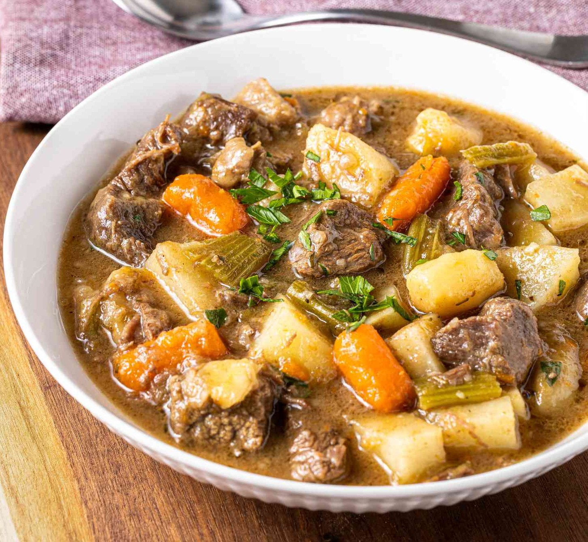

Beef Meal
Tender beef served with pap or rice and a delicious side.
R130
OrderWelcome to Kwa Shumilensizwa, where traditional Kasi flavours meet generous portions and friendly service.

Enjoy some of our popular meals prepared with authentic flavours and generous portions.
Kwa Shumilensizwa began with a simple idea: to bring people together through good, home-cooked food.
Inspired by traditional meals and recipes shared within families and communities, we aim to provide authentic, satisfying Kasi food with friendly service.
Read More"The food tastes just like a proper home-cooked meal. Generous portions and great flavour!"
"Great Kasi food and friendly service. I would definitely order again."
"The meals are filling, tasty and affordable."
Monday - Sunday
Please contact us for current operating hours.